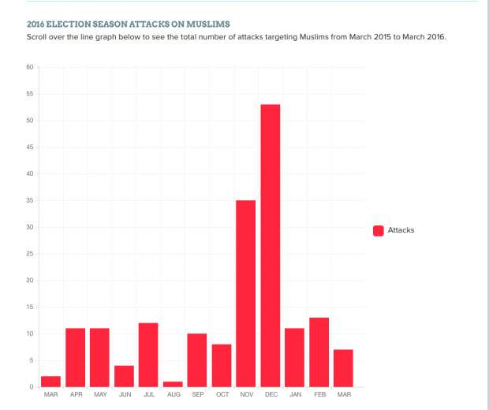

أحدث الأخبار
- الزمالك يكتسح رينجرز النيجيري بأربعة أهداف مقابل هدف وحيد
- القضاء الإداري يقضي بحل اتحاد الكرة وبطلان الانتخابات الأخيرة
- مقتل 3 أشخاص وإصابة 3 آخرين في حادث مروري بالبحيرة
- وزير الخارجية يجري اتصالاً مع رئيس المجلس الرئاسي الليبي
- عاصمة مصر تتجه لزيادة سكانية نصف مليون العام الجاري
- باولو يقود هجوم الزمالك أمام رينجرز في دوري الأبطال
- المالية تعفي المطاعم غير السياحية من ضريبة القيمة المضافة بشروط
- "القضاء الإداري" يلزم الجامعة الأمريكية بتحصيل مصروفاتها بالجنيه المصري
أيام ترامب الأولى ..«الحقائق المغلوطة»
ماذا يجري في الولايات المتحدة الأمريكية التي كانت قد اختارت تمثال «الحرية» الذي يصل ارتفاعه إلى ٩٣ مترا ليكون أول ما يراه القادم إليها من «العالم القديم» عبر الأطلسي، والتي نعرف جميعا أنها لم تصنع قيمتها وقوتها إلا نتيجة لما يقدمه «التنوع» من ثراء، «والحرية» من حماية؟
«alternative facts» مصطلح شهير يعرفه كل من قرأ رواية جورج أورويلالشهيرة «١٩٨٤» التي تتحدث عن ديماجوجية النظم الشمولية، وأساليبها في السيطرة على أدمغة الجماهير.
قبل أيام، ومع الأيام الأولى لحكم الرئيس الأمريكي الجديد دونالد ترامب، علمنا من إحصاءات موقع amazon.com أن مبيعات رواية أورويل تلك زادت بشكل غير مسبوق بعد أن استخدمت مستشارة ترامب Kellyanne Conway مصطلحات اشتهرت بها الرواية لتبرير «الحقائق المغلوطة» التي ترد في بيانات البيت الأبيض.
إلى أين تتجه الولايات المتحدة الأمريكية تحت حكم ترامب؟ أو بالأحرى، إلى أين يذهب ترامب بالولايات المتحدة، وبالعالم كله.. وبالحضارة الإنسانية «العولمية» الحديثة القائمة على التنوع؟
***
ربما لا يعرف ترامب ماذا تعني اليوجينيا Eugenics، ولا أظنه قرأ جالتون (فمثله لا يقرأ أصلا). ولكنه في كل مواقفه من الآخر، أو المهاجرين، أو المرأة، يبدو وفيا لتلك الأفكار المدمرة التي قادت عنصريا كهتلر يوما ما إلى الاقتراب من تدمير العالم.
صحيحٌ أن لليوجينيا مدارسها العلمية، وأصولها الفلسفية وأطروحاتها البيولوجية، ولكن من الثابت تاريخيا أن خروجها من المعامل وقاعات البحث الأكاديمي وتحولها إلى حركة فكرية لها تطبيقاتها الاجتماعية، وتأثيراتها السياسية المباشرة، كان خطيرا. سواء في الأفكار التمييزية «بيولوجيا» التي وجدت لها مكانا في الفكر والسياسات الأمريكية في نهاية القرن التاسع عشر، أو عندما تلقفها هتلر ليعطي مذاقا «علميا» لجنونه المدمر في تلك الأيام الكئيبة من القرن العشرين.
مهما كان منطق اليوجينيين، فدرس التاريخ يقول إن التمييز بين البشر، أيا ما كان أساسه، لم يأت لنا أبدا بعالم أكثر أمنا، أو حتى أكثر رفاهية وتقدما. بل، على العكس قرأنا في درس التاريخ أن معظم الإمبراطوريات القوية بداية من الدولة الإسلامية الأولى وحتى الإمبراطورية الأمريكية «العولمية» الحديثة، كان عمادها التنوع (بغض النظر عن انتكاسات المستبدين). كما قرأنا في التاريخ أن أفكارا «عنصرية» تؤمن بتفوق جنس على غيره من أجناس البشر ــ مثلما آمن هتلر ــ قادت العالم إلى حرب عالمية تجاوز عدد ضحاياها الستين مليونا (أكرر: ستين مليونا).
تقول «الحقائق المغلوطة» alternative facts التي يروجها المدافعون عن الرئيس الأمريكي أن قراراته «ليست تمييزية»، وأنها لا تستهدف المسلمين (!).
ولمن لا يعرف معنى التمييز (على أساس الدين) أن يعود إلى تفاصيل قرارات ترامب التي تمنع اللاجئين (عدا المسيحيين).
كلنا سمعنا الرجل إبان حملته الانتخابية يتحدث صراحة عن نيته «منع المسلمين» من دخول أمريكا (الرابط للفيديو هنا) كما لم يعد سرا أن ترامب طلب من مستشاره رودي جولياني أن يبحث عن طريقة قانونية لمنع المسلمين (هكذا على إطلاقهم) من دخول الولايات المتحدة الأمريكية (الرابط لتصريحات جولياني هنا)
ولمن لا يعرف معنى التمييز (على أساس العرق أو الهوية) أن يعود إلى قراره بمنع «جميع» رعايا الدول السبع التي شملها القرار (أكرر: «جميع رعايا») لا الإرهابيين، أو المتطرفين منهم. ولا حتى أولئك الذين تحوم حولهم «شبهات» مجرد شبهات أمنية. معنى ذلك أن القرار كان يمكن أن يشمل (على سبيل المثال لا الحصر)، اسما مثل الراحلة «زها حديد»» أحد أشهر الأسماء في العالم كله في الهندسة المعمارية، لمجرد كونها «عراقية». كما يمكن أن يشمل اسما مثل محمد إبراهيم Mo Ibrahim ملياردير صناعة الاتصالات، وصاحب الجائزة الأشهر في مجال الحكم الرشيد، لا لشيء إلا لأنه من مواليد حلفا السودانية. ليس ذلك فقط، فقرارات ترامب «التمييزية» تلك قد تمنع واحدة مثل المطربة الإيرانية السبعينية الشهيرة كوكوش Googoosh التي رأيتها على Euronewss تتحدث عن كيف أنها على الرغم من حملها للبطاقة الخضراء ربما لن تستطيع العودة إلى منزلها بأمريكا، كما أنها بالطبع لا تستطيع العودة إلى وطنها الأصلي إيران الذي تركته قبل سنوات طويلة هربا بفنها من التطرف الديني للنظام الإيراني الحاكم. ها قد جاء اليوم الذي تقف فيه «الفنانة» التي تخشى الاضطهاد في المربع نفسه مع المتطرفين الإسلاميين في عرف ترامب وأنصاره. لماذا؟ لأن العنصريين لا يعرفون المنطق. ويضعون كل من عداهم (أكرر: «كل من عداهم») في خانة واحدة. هكذا فعل النازي حين كان يُؤْمِن بتفوق الجنس الآري. وهكذا يفعل الصهاينة، عندما يعتقدون بأنهم «شعب الله المختار».
لا يعرف ترامب أن قراراته التمييزية تلك تحرم الانتلجنسيا الأمريكية من كثير من رموزها، كما تحرم صناعة المعلوماتية الأمريكية من كثير من كوادرها والعاملين فيها. كما لعله لا يعلم أن قراراته تلك لو كانت مطبقة منذ عقود ما عرفت أمريكا أو العالم عبقريا مثل « ستيف جوبز» المولود لسوري من حمص اسمه عبدالفتاح جندلي كان قد جاء إلى الولايات المتحدة دارسا في خمسينيات القرن الماضي. كما لم يطلع طبعا الرجل الذي لم ينشغل يوما إلا بمطاردة ملكات الجمال، والتهرب من الضرائب على قائمة الأمريكيين الحاصلين على نوبل فى العلوم وغيرها ليعرف كم منهم من المهاجرين، ومن أصول غير أمريكية.
***
قد يكون صحيحا أن هناك مسلمين متطرفين وإرهابيين. وهو صحيح بالقطع ولا شك فيه.
ولكن صحيحٌ أيضا أنه من قبيل التمييز العنصري، فضلا عنه أنه من قبيل الحمق والجنون «والحقائق المغلوطة» أن نعتبر أن «كل» المسلمين إرهابيون، أو أن كل مسلم مشروع محتمل لإرهابي، فقط لكونه نطق بالشهادتين، أو لأن جواز سفره يشير في خانة الديانة إلى أنه مسلم.
قد يكون صحيحا أن هناك مسلمين متطرفين وإرهابيين. وهو صحيح بالقطع ولا شك فيه.
ولكن صحيح أيضا أن المسلمين من رعايا تلك الدول الإسلامية السبع ليسوا «بالمطلق» متطرفين أو إرهابيين، لمجرد كونهم يحملون جوازات سفر لهذه الدولة أو تلك. أو لمجرد أنهم ولدوا في هذه البلدة أو تلك. بل على العكس، فأغلبيتهم الساحقة كانوا ضحايا لدموية أولئك الإرهابيين، بالضبط كما هم ضحايا لوحشية حكوماتهم.
بل، وصحيحٌ أيضا (وفاقع الدلالة) أن أيا من رعايا الدول السبع الذي شمل قرار ترامب (كل) رعاياها لم توكل إلى أي من مهاجريها أبدا مسئولية أى عملية إرهابية أسفرت عن وقوع ضحايا في الولايات المتحدة الأمريكية. بل كلنا نعرف أن الذين قاموا بباكورة تلك العمليات في الحادي عشر من سبتمبر ٢٠٠١١ كانوا منجنسيات أخرى.
***
والخلاصة، لكي نضع الأمر «منطقيا» في إطاره الصحيح، يلزم أن نجيب «بموضوعية» عن أسئلة، كان ينبغي ألا تحتاج «لبدهيتها» إلى إجابة:
١ ــ هل هناك تطرف، وإرهاب يرفع رايات إسلامية، صائحا «الله أكبر»؟
الإجابة قاطعة: نعم، وفِى ذلك، وفي أسبابه تفصيل لطالما أسهبنا في الكتابة عنه.
٢ ــ هل يعني ذلك أن كل من اتخذ الإسلام دينا أو نطق بالشهادتين إرهابي؟
لا أظن السؤال بحاجة إلى إجابة. وإن كنا في عالم «الحقائق المغلوطة» بحاجة إلى أن نضع الإجابة «البدهية»، إلى جانب ما تعنيه قرارات الرئيس الأمريكي.. لنحكم. بل وربما علينا، على العكس أن نعرف أنه وإن كان هناك إرهابيون مسلمون، إلا أن المسلمين أيضا كانوا ضحايا لتزايد جرائم الكراهية التي استهدفتهم (راجع تقرير الـ F.B.I. عن الموضوع). كما كانوا ضحايا للهجمات التي تزايدت تزايدا ملحوظا مع حملة ترامب الانتخابية (حسب تقرير موثق لجامعة جورج تاون).

والخلاصة، لكي نضع الأمر «منطقيا» في إطاره الصحيح، يلزم أن نجيب «بموضوعية» عن أسئلة، كان ينبغي ألا تحتاج «لبدهيتها» إلى إجابة:
١ ــ هل هناك تطرف، وإرهاب يرفع رايات إسلامية، صائحا «الله أكبر»؟
الإجابة قاطعة: نعم، وفِى ذلك، وفي أسبابه تفصيل لطالما أسهبنا في الكتابة عنه.
٢ ــ هل يعني ذلك أن كل من اتخذ الإسلام دينا أو نطق بالشهادتين إرهابي؟
لا أظن السؤال بحاجة إلى إجابة. وإن كنا في عالم «الحقائق المغلوطة» بحاجة إلى أن نضع الإجابة «البدهية»، إلى جانب ما تعنيه قرارات الرئيس الأمريكي.. لنحكم. بل وربما علينا، على العكس أن نعرف أنه وإن كان هناك إرهابيون مسلمون، إلا أن المسلمين أيضا كانوا ضحايا لتزايد جرائم الكراهية التي استهدفتهم (راجع تقرير الـ F.B.I. عن الموضوع). كما كانوا ضحايا للهجمات التي تزايدت تزايدا ملحوظا مع حملة ترامب الانتخابية (حسب تقرير موثق لجامعة جورج تاون).
٥ ــ وربما كان هذا هو السؤال المحوري: هل تعمل قرارات ترامب الهوجاء تلك على المساعدة على مكافحة الإرهاب، أم أنها على العكس تؤدي بشكل غير مباشر إلى تقويته؛ حججا وفكرا وأوضاعا دولية مواتية؟
الثابت أن المروجين، أو المتعاطفين للفكر المتطرف كانوا المسارعين بالاستفادة من تلك القرارات. فلم يكن حبر القرارات التي تباهي بها ترامب أمام عدسات التلفزيون قد جف بعد، حتى كان تنظيم الدولة ISIS قد رد ببيانات «دعائية» باللغتين العربية والإنجليزية يشكر فيها الرئيس الأمريكي الذي كشف (كما يقول جوهر دعايتهم) عن الحقيقة التي يضمرها الغرب «إنهم يعادون الإسلام».
جاءت إذن عنصرية الرئيس المتعجرف أفضل هدية لدعم فكرة بن لادن القديمة عن «دار السلم ودار الحرب» وحتمية الجهاد. ولا مكان للأسف مع عنصرية ترامب لمثل طارق رمضان وأفكاره الداعية للتعايش والسلام.
في تقرير مهم لمعهد بروكنجز (نشر قبل أيام) نقرأ أيضا كيف ستؤدي قرارات ترامب تلك لإضعاف الجهود الدولية «المشتركة» للحفاظ على السلم ومكافحة الإرهاب. فهو، وإن بشكل غير مباشر (والكلام هنا لتقرير بروكينجز) سيضعف بالضرورة the international refugee system as a whole بإعطاء رسالة واضحة بأنه «لا يعنينا». كما أنه سيضع مسافة «غير مطلوبة الآن» بين الولايات المتحدة وحلفائها التقليديين في أوروبا، في وقت تتزايد فيه تهديدات السلم العالمي. كما أنه (والكلام مازال لتقرير بروكينجز)، فضلا عن إعطائه إكسير الحياة لدعاية المتطرفين الإرهابية، يزيد الضغوط على الدول المجاورة لمناطق النزاعات «المصدرة للاجئين» مما يزيد من احتمالات عدم الاستقرار في منطقة هشة بطبيعتها.
يضاف إلى ذلك أن الرد على «الحقائق المغلوطة» التي يرددها هنا وهناك المدافعون عن ترامب، جاء سريعا، وفي الأسبوع ذاته: عمليتان إرهابيتان، إحداهما نجحت وقتل فيها متطرف «مسيحي / كندي» مصلين مسلمين في مسجد. والثانية فشلت في ساحة اللوفر في باريس، وكان بطلها هذه المرة مصري مسلم يقيم في الإمارات، وكلا الدولتين لم يضعهما ترامب على لائحته. ليس المقصود طبعا دعوة ترامب لتوسيع «اللائحة التمييزية» لتشمل الكنديين والمصريين ومواطني الإمارات. بل المقصود هو كشف كم أن مثل تلك القرارات العنصرية غبية. فليس كل الكنديين ولا المسيحيين إرهابيين يحملون السلاح لمهاجمة المساجد، بل على العكس كان رئيس الوزراء الكندي الأول فى انتقاد قرارات ترامب، مرحبا بالمسلمين الذين سيطردهم. كما أن ليس كل المصريين ولا المسلمين إرهابيين يحملون السكاكين لمهاجمة الناس. بل على العكس أيضا فدينهم يعلمهم أن «مَنْ قَتَلَ نَفْسا بِغَيْرِ نَفْسٍ أَوْ فَسَادٍ فِى الأرْضِ فَكَأَنَّمَا قَتَلَ النَّاسَ جَمِيعا». ولكنه التطرف والجنون على الجانبين، ومن ثم «دائرة الشر الجهنمية».
***
وبعد..
فيبقى أن فيما جرى ويجري على الضفة الأخرى من الأطلنطي، دروس علينا أن نتعلمها عن فائدة الحريات وثقافة الديموقراطية «الحقيقية»، فى مقاومة مصائب «الترامبيين» حين يصلوا عبر ترويج «الحقائق المغلوطة» إلى السلطة.
فحيث لا مكان لثقافة «حسب توجيهات السيد الرئيس»، رفضت القائم بأعمال وزير العدل، والتي كان عليها أن تدافع عن قراراته أمام المحاكم،القيام بالمهمة، كما رفضها أكثر من ألف دبلوماسي معتبرين أنها «لا تساعد على مكافحة الإرهاب». وحيث هناك «حرية تعبير، وتظاهر، ومجتمع مدني قوي» جابت المظاهرات الشوارع والمطارات الأمريكية، وشارك فيها أتباع كل الأديان دفاعا عن «حقوق المسلمين». أما الإعلام، الذي لا يعرف رقابة «ذاتية أو حكومية»، كما لا يعرف «إدارة للتوجيه»، فيكفيكم أن تتابعوه.
هذه هي الديموقراطية التي تصحح نفسها بنفسها، كما قلنا ألف مرة.
……
ثم، وعلى الناحية الأخرى: فقد يكون ترامب «العنصري الفظ» متسقا مع ذاته، حين يتحيز «بالمطلق» لليمين الإسرائيلي، وحين لا يخفى موقفه من الإسلام والمسلمين وبعض العرب. وأعرف أن الطيور على أشكالها تقع، ولكن يبقى السؤال (الذي ربما لم يعد محيرا)، لماذا يقف بَعضُنَا فى صفه هكذا؟!
قاتل الله «الكيمياء».. وقصر النظر.
تعليقات الفيسبوك